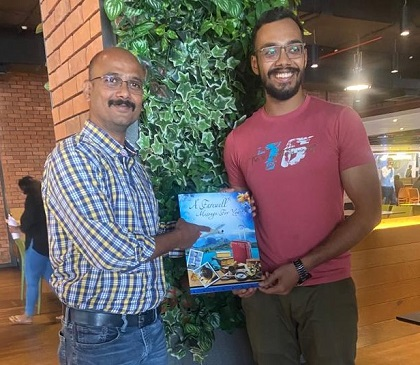
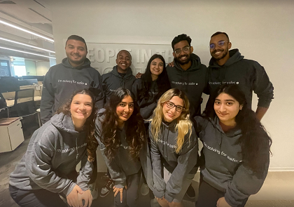
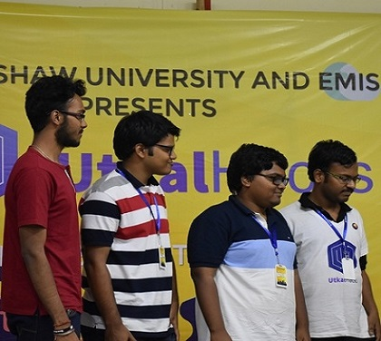

Cloud Platform Engineering
Designing and operating multi-tenant Azure services — configuration management, feature flags and secure service-to-service connections that stay fast and available under load.
Hi there, I'm 👋
</>
I build cloud platform services that thousands of developers depend on — today on Azure App Configuration and Service Linker at Microsoft. Previously shipped Agentic AI systems at Motorola Solutions and regulatory-reporting microservices handling 1M+ trades/day at Credit Suisse.

Engineer by trade, builder by instinct — happiest when a hard systems problem meets a clean, well-tested solution.
I'm a Software Engineer II at Microsoft, working on Azure App Configuration and Service Linker — the services that let teams centralize their app settings, feature flags and service-to-service connections without shipping secrets in code.
Before Microsoft I built Agentic AI assistants at Motorola Solutions, using Azure OpenAI with RAG and prompt engineering to turn plain-English questions into SQL over AWS Redshift. Earlier, three years at Credit Suisse gave me deep experience with Java, Spring Boot and Node.js microservices for regulatory reporting at real scale.
I hold an MS in Computer Science from the University of Florida, where I focused on algorithms and operating systems. Outside work, you'll find me solving problems on LeetCode, on a soccer field, in the gym, or planning the next trip.
Designing and operating multi-tenant Azure services — configuration management, feature flags and secure service-to-service connections that stay fast and available under load.
Backends that move millions of records a day and interfaces people actually enjoy using — Spring Boot, Node.js and React, wired together with Kafka, GraphQL and solid API design.
Shipping LLM systems that do real work: RAG pipelines, few-shot prompt engineering and natural-language to SQL agents that query warehouses and answer in plain English.
Data structures and algorithms are a genuine hobby, not just interview prep. Regular on LeetCode and a firm believer that the right data structure removes most of the code.
Taking features from ambiguous idea to production — writing the design doc, driving reviews, unblocking teammates and staying accountable long after the PR merges.
Traveller, soccer player and gym regular. The best debugging ideas usually show up somewhere between the trailhead and the last set.
Filter by category to see what I reach for day to day.
 Python
Python JavaScript
JavaScript HTML &
CSS
HTML &
CSS Bash
Bash React & Redux
React & Redux Docker
Docker Git &
CI/CD
Git &
CI/CD LangChain
LangChainA few side projects and coursework builds — all open source on GitHub.
A GenAI tech-jargon translator that sits in your chat space and automatically rewrites dense, acronym-heavy messages into clear, human sentences.
Automatically detects and conceals personally identifiable information in public-safety incident records so the data stays usable for analysis without exposing individuals.
A book-records management system built from scratch on a Red-Black tree for O(log n) lookups and a binary min-heap for fair, priority-based reservation queues.
A YOLO object-detection model that spots elephants approaching farmland and triggers a deterrent buzzer, reducing dangerous human-wildlife encounters.
Click any photo to open it full size.



Whether it's a role, a collaboration or just a good engineering conversation — my inbox is open.
The fastest way to reach me is email or LinkedIn. I usually reply within a day.
Fill this in and it'll open your mail app with everything ready to send.